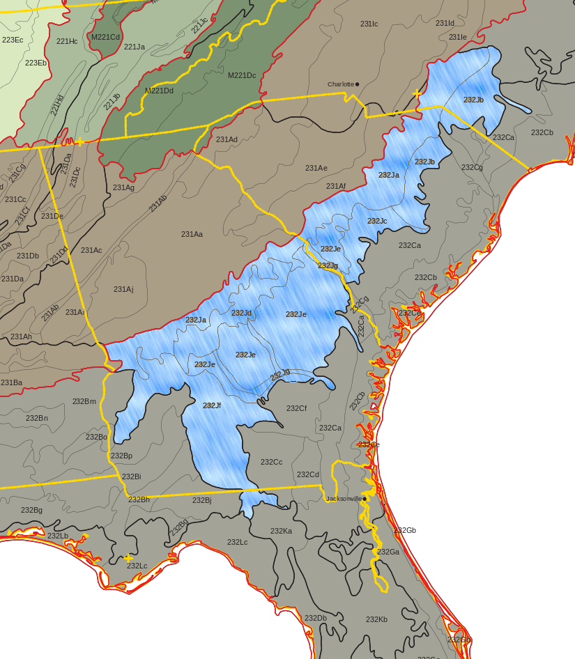
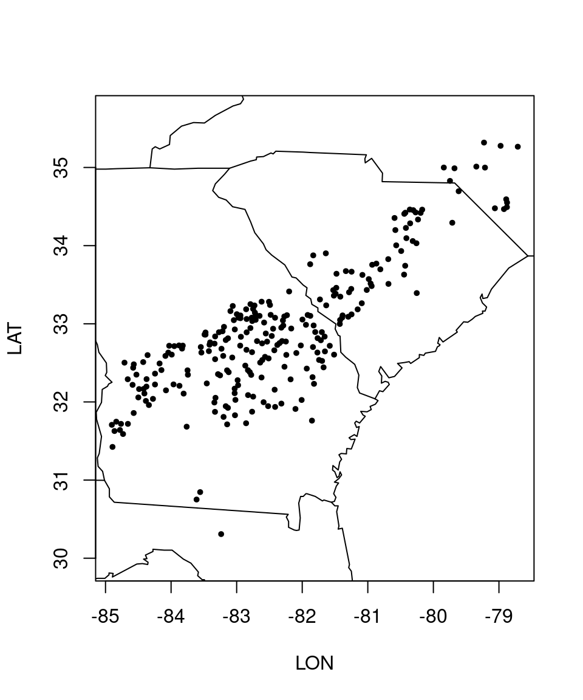

# packages from Module 1
library(rFIA)
library(dplyr)
library(tidyr)
library(maps)
# additional packages
library(callr)MODULE 2A - Loblolly pine forests: Data management & filtering
Disclaimer: This material was prepared on my own personal time and is offered in my personal capacity only. It does not represent the views of, nor is it endorsed by, any current or past employer.
—INTRODUCTION—
In Module 1, working with a small set of FIA plots from Rhode Island, we saw how to apply some of the VM0045 donor pool selection criteria. Now, we turn our attention to the Southeastern US. Targetting a larger geographic area, we apply the full set of donor selection criteria to FIA plots in loblolly pine forests in ecological section 232J (i.e., Southern Atlantic Coastal Plains and Flatwoods section of the Outer Coastal Plain Mixed Forest province).

As seen in the map, section 232J intersects four states, each of which is substantially larger than Rhode Island. Thus, this module deals with much larger data files than the first module. As we’ll see, this requires some modifications to how we download, read in, and process the FIA data. These modifications go beyond what is presented in the rFIA big data guide, which is only concerned with unit-level estimation. By contrast, this module deals with more granular, plot-level estimation.
Because of the added data management issues and because of the more complete treatment of the VM0045 protocol, Module 2 is broken up into multiple parts. In part A (the current part) we’ll be dealing with data management and applying donor pool selection criteria. Matching and match quality will be addressed in part B.
Thus, this module approximates how one might approach generating a composite baseline for an IFM project involving loblolly pine plantings.
Dr. Kincaid’s $169 laptop challenge
Before we jump into coding, I want to tell you about Dr. Dwight Kincaid. I learned the fundamentals of coding from Dr. Kincaid, one of my favorite professors of all time. In his biostatistics/R class in 2018, Dr. Kincaid would often point out that he was doing all of his R demos on a $169 laptop. That thing must’ve had 4 GB RAM max. He wanted to teach us that one didn’t necessarily need fancy, high-powered computers to run large analyses if one learned to write efficient code.
Although the laptop I’m currently using has 12 GB RAM (plus 9 GB swap), my aim is that the code in this module could still run on Dr. Kincaid’s $169 laptop. I do this for two reasons. First, I want this code to be accessible to a wider range of users. Second, it’s a good habit to get into for scaling to even larger datasets.
—R PIPELINE—
Load packages
In addition to some of the packages used in Module 1, Module 2A also uses callr. This allows us to run isolated, one-off sessions of R and pass the output to the current working session. In turn, this helps with memory management issues that come with dealing with RAM intensive processes.
Download data from FIADB
This is where things start to get tricky. In Module 1, I purposefully selected a small geographic area (Rhode Island) to keep things simple and avoid having to deal with memory management. But in this module, we’re dealing with a larger dataset.
The combined FIADB files download for North Carolina, South Carolina, Georgia, and Florida is a much larger size than Rhode Island, so much so that loading the data directly into memory via rFIA::getFIA() becomes impractical on a personal computer.
We employ two strategies to deal with this:
Specify
getFIA()to only download the tables required byrFIA::carbon(), a function used later to calculate carbon/acre. Info on required tables is found in the function definition forrFIA::carbonStarter, an internal function that is called bycarbon().Specify
getFIA()to download files to disk rather than loading into RAM.
### SET UP DOWLOAD PARAMETERS -------------------------------------------------
# 2-letter code for each desired US state
states <- c("NC","SC","GA","FL")
# minimal tables required for carbon calcs
carb_tbls <- c("PLOT", "TREE", "COND", "POP_PLOT_STRATUM_ASSGN",
"POP_ESTN_UNIT", "POP_EVAL", "POP_STRATUM",
"POP_EVAL_TYP", "POP_EVAL_GRP", "PLOTGEOM")
# file path to directory where raw FIADB csv files will be downloaded
dl_dir <- "./data/raw/" # CHANGE THIS TO YOUR OWN PATH ### DOWNLOAD FIADB TABLES TO LOCAL DISK ---------------------------------------
# set timeout to 1 hour, otherwise R will abort longer downloads
options(timeout=3600)
# get time just before downloads start (for benchmarking)
t0 <- Sys.time()
# download FIADB files
FIADB <- getFIA(states = states, # specify which states' data to download
tables = carb_tbls, # specify which tables to download
load = FALSE, # don't load data into RAM...
dir = dl_dir) # ... instead, download to specified directory
# get time after downloads finish (for benchmarking)
t1 <- Sys.time()
# calculate the time it took to run the downloads
t1 - t0The downloaded csv files total about 2.8 GB, and the download took about 5.3 minutes on my laptop. Right afterwards, I ran a speed test at speedtest.net. My download speed during the test was about 10x faster than while downloading the FIADB files, which suggests the bottleneck may be on the FIA server side rather than my local connection.
Determine Necessary Columns
The next thing I did to ease the burden on computing resources was select only necessary columns when importing the tables into R for carbon calculations.
FIADB tables often have tens to hundreds of columns, but rFIA:carbon() only needs a small handful of these. By reducing the number of columns, we can substantially reduce the size of the imported data.
My first step was to point ChatGPT to the rFIA source code and ask it determine which columns in each of the 10 FIADB table are requried by carbon(). Then, I imported those tables, selected only the indicated columns, and ran carbon(). It failed, saying it couldn’t find a necessary column.
I then asked ChatGPT to double check its list of columns against the repo and try again. Again it returned a list of columns, and again carbon() failed.
Taking a closer look at the rFIA code, I saw that required columns are not always stated explicitly. This makes it a difficult task–even for a gen AI chatbot–to determine which columns are actually needed. (I wonder if ChatGPT would be able to work out an accurate list of required columns if provided with the fulll list of all column names to start from…) I needed a more systematic approach.
I had noticed that each time carbon() failed, the error message named a specific column it was looking for that it couldn’t find. That gave me the idea to run a series of leave-one-out experiments. The logic goes like this: for each column in each table, leave that column out, and run carbon(); whenever carbon() fails to run, note which column was left out; for this module’s dataset and carbon() options, those are the columns carbon() cannot do without.
step 1 - build a tiny test dataset
The carbon() function can be fairly time consuming to run, depending on how much data you throw at it. Since the leave-one-out experiment calls carbon() hundreds of times (once for each column in each table), we want to give it the minimal amount of data needed to run the experiment.
A priori, tables with one row each should be enough. So, using the Florida csv files downloaded earlier and filtering to retain only the first row of each table, we construct a tiny data object for testing.
### BUILD TINY DATASET FOR TESTING --------------------------------------------
# load tiny tables into memory
temp <- lapply(
X = carb_tbls,
FUN = function(tbl){
readFIA(
dir = dl_dir, # path to csv files
tables = tbl, # table name
states = "FL", # state
nrows = 1 # first row from each table
)[[tbl]] # end data.frame() and extract it from list
} # end function()
) # end lapply()
names(temp) <- carb_tbls # add table names back in
FIADB_test <- c(temp) # combine the output objects
class(FIADB_test) <- "FIA.Database" # re-assign correct classThe last line of code assigns the class FIA.Database to the list in which the tables are stored. When operating on data stored in memory (as opposed to stored on disk) carbon() will only accept a data object of this class. DISCLAIMER: while coercing a list to class FIA.Database works fine for the current application, it’s possible this hack breaks some functionality is other aspects of rFIA.
step 2 - verify tiny test dataset
Before running the experiment, it’s important to check if carbon() will actually accept tables containing just one row each.
# run carbon() on tiny dataset to see if it works
carbon(FIADB_test, byPlot = TRUE, nCores = 1)# A tibble: 0 × 6
# ℹ 6 variables: PLT_CN <dbl>, YEAR <int>, pltID <chr>, POOL <chr>,
# CARB_ACRE <dbl>, PROP_FOREST <dbl>The code runs without error, so we’re good to go on to the next step.
step 3 - leave-one-out test
The code below removes each column one at a time. For each missing column, it does carbon calculations (single core, per-plot basis) and also tries printing the object. If either carbon() or print() throw an error, it records the name of the missing column in a list. For each table, it also keeps track of the names and numbers of columns required by each function.
I decided to include printing in the leave-one-out test, because printing an FIA.Database object requires certain table columns. I have found that manipulating FIA.Database objects using functions outside of rFIA (e.g., using dplyr::select()) can break certain functionalities. Printing the database is one of these. Some of these broken functionalities I’ve decided are not critical. Others, like losing the ability to easily print the database to the terminal, are harder to live without. So in the case of printing, I decided it was worthwhile to figure out which columns from which tables need to be retained.
On my laptop, the code below took over 4 minutes to complete and used about 0.1 GB RAM. If desired, the time could be shortened by paralellizing either of the for() loops, though this could increase memory usage.
### LEAVE-ONE-OUT TEST --------------------------------------------------------
t0 <- Sys.time() # record time at beginning
# initialize list to hold names of required columns
req_cols_info <- setNames(vector("list", length(carb_tbls)), carb_tbls)
# initialize list to hold summary stats (counts)
summary_rows <- list()
for(tbl in carb_tbls) { # being outer for() loop [by table]
dt <- FIADB_test[[tbl]] # extract single table/dataframe
cols <- names(dt) # extract column names
# initialize holders for req'd col names
req_carbon <- character(0)
req_print <- character(0)
for(col in cols){ # begin inner for() loop [by table column]
db2 <- FIADB_test # copy full tiny db
# replace table with dropped version
db2[[tbl]] <- dt %>% select(-all_of(col))
# try running carbon() & record any errors
tc <- try(carbon(db2, byPlot = TRUE, nCores = 1), silent = TRUE)
# try print() without printing to terminal & record any errors
tp <- try(capture.output(print(db2)), silent = TRUE)
# mark column as required on any error
if(inherits(tc, "try-error")){req_carbon <- c(req_carbon, col)}
if(inherits(tp, "try-error")){req_print <- c(req_print, col)}
} # end inner for() loop
# per-column flag map for this table
req_map <- data.frame(
col = cols,
req_carbon = cols %in% req_carbon,
req_print = cols %in% req_print,
stringsAsFactors = FALSE
) # end data.frame()
# add logical columns for if FIA col req'd by either
req_map$req_any <- req_map$req_carbon | req_map$req_print
req_cols_info[[tbl]] <- req_map # update the holder list
total <- length(cols) # total number of cols in table
n_carbon <- sum(req_map$req_carbon) # number of cols req'd by carbon()
n_any <- sum(req_map$req_any) # number of cols req'd by either
# add stats to summary list
summary_rows[[tbl]] <- data.frame(
table = tbl,
req_carbon_n = n_carbon,
req_any_n = n_any,
tot_cols = total,
req_any_frac = sprintf("%d/%d", n_any, total),
req_any_pct = round(100 * n_any/total, 1),
stringsAsFactors = FALSE
) # end data.frame()
} # end outer for() loop
tot_cols <- sum(summary_rows$tot_cols)
t1 <- Sys.time() # record time at end
t1 - t0 # time to run code chunk that were generated by the leave-one-out test, so we don't have to re-run the test every time we run the script. step 4 - examine results
Let’s look at the column totals from the leave-one-out test.
### EXAMINE RESULTS OF LEAVE-ONE-OUT TEST -------------------------------------
# combine rows from summary table into single dataframe
summary_df <- do.call(rbind, summary_rows)
# calculate totals across tables
tot_carbon <- sum(summary_df$req_carbon_n)
tot_any <- sum(summary_df$req_any_n)
tot_cols <- sum(summary_df$tot_cols)
# calculate totals for each column in the summary table
tot_row <- data.frame(
table = "totals",
req_carbon_n = tot_carbon,
req_any_n = tot_any,
tot_cols = tot_cols,
req_any_frac = sprintf("%d/%d", tot_any, tot_cols),
req_any_pct = round(100 * tot_any / tot_cols, 1),
stringsAsFactors = FALSE
) # end data.frame()
# add totals row to bottom of summary table
summary_df <- rbind(summary_df, tot_row)
# print the full summary table
print(summary_df, row.names = FALSE, width = 500) table req_carbon_n req_any_n tot_cols req_any_frac req_any_pct
PLOT 9 9 61 9/61 14.8
TREE 10 10 196 10/196 5.1
COND 10 10 151 10/151 6.6
POP_PLOT_STRATUM_ASSGN 5 5 12 5/12 41.7
POP_ESTN_UNIT 4 4 13 4/13 30.8
POP_EVAL 5 6 15 6/15 40.0
POP_STRATUM 7 8 24 8/24 33.3
POP_EVAL_TYP 2 2 4 2/4 50.0
POP_EVAL_GRP 0 0 6 0/6 0.0
PLOTGEOM 8 8 22 8/22 36.4
totals 60 62 504 62/504 12.3Some observations:
Across the 10 tables, only 62 out 504 columns are required for both
carbon()andprint()to function properly. (side note: the 10 tables actually contained 524 columns total, butreadFIAdropped 20 of them during import)At most 10 columns are required from any one table.
No columns are required from the POP_EVAL_GRP table, even though it is listed as a required table in
rFIAsource code. I am not sure why this is. Butcarbon()throws an error if this table is missing altogether.TREE and COND tables have the greatest numbers of total columns.
Only ~5% of columns in the TREE table are requried. This represents a substantial reduction in overall database size: among the four states in this module (i.e., FL, GA, NC, SC), the TREE table is 4-7x larger in file size than the other nine tables combined.
Comparing
req_carbon_nvs.req_any_n, we see that only two additional columns are needed to also make printing functional: one from POP_EVAL_GRP and one from POP_STRATUM. Given how relatively small these two tables are, the effect of adding these two additional columns on database size is negligible. NOTE: to be clear, this is not the same as saying that printing only requires two columns, but rather than printing requires only two additional columns that aren’t already required bycarbon().
We can also view the names of the required columns:
# extract required column names
req_col_names <- lapply(req_cols_info,
function(x){x$col[x$req_any]})
req_col_names # print required column names$PLOT
[1] "CN" "INVYR" "STATECD"
[4] "UNITCD" "COUNTYCD" "PLOT"
[7] "PLOT_STATUS_CD" "MEASYEAR" "MACRO_BREAKPOINT_DIA"
$TREE
[1] "PLT_CN" "SUBP" "TREE" "CONDID" "STATUSCD" "SPCD"
[7] "DIA" "TPA_UNADJ" "CARBON_AG" "CARBON_BG"
$COND
[1] "PLT_CN" "CONDID" "COND_STATUS_CD"
[4] "PROP_BASIS" "CONDPROP_UNADJ" "CARBON_DOWN_DEAD"
[7] "CARBON_LITTER" "CARBON_SOIL_ORG" "CARBON_UNDERSTORY_AG"
[10] "CARBON_UNDERSTORY_BG"
$POP_PLOT_STRATUM_ASSGN
[1] "STRATUM_CN" "PLT_CN" "UNITCD" "COUNTYCD" "PLOT"
$POP_ESTN_UNIT
[1] "CN" "EVAL_CN" "AREA_USED" "P1PNTCNT_EU"
$POP_EVAL
[1] "CN" "EVALID" "STATECD" "LOCATION_NM" "END_INVYR"
[6] "ESTN_METHOD"
$POP_STRATUM
[1] "CN" "ESTN_UNIT_CN" "EVALID" "P1POINTCNT"
[5] "P2POINTCNT" "ADJ_FACTOR_MACR" "ADJ_FACTOR_SUBP" "ADJ_FACTOR_MICR"
$POP_EVAL_TYP
[1] "EVAL_CN" "EVAL_TYP"
$POP_EVAL_GRP
character(0)
$PLOTGEOM
[1] "CN" "STATECD" "INVYR" "UNITCD" "COUNTYCD" "PLOT" "LAT"
[8] "LON" Note that each non-empty table contains at least one “CN” type of column. These are unique record identifiers and are likely also used for joins within carbon().
step 5 - validate results
The last step is to construct a subset of the tiny test set that contains only the putatively required columns and to see if carbon() still runs without error.
First, let’s filter columns on the tiny dataset and compare column counts to the unfiltered dataset, as a sanity check. The number of columns in the column-filtered dataset is what we’d expect.
# select only required columns for each table
temp <- lapply(names(req_col_names),
function(tbl){FIADB_test[[tbl]] %>%
select(all_of(req_col_names[[tbl]]))})
names(temp) <- carb_tbls # add table names back in
FIADB_req <- c(temp) # combine the output objects
class(FIADB_req) <- "FIA.Database" # re-assign correct class
# confirm for each table, compare number of columns: full vs. required
cbind(full = sapply(FIADB_test, ncol), req = sapply(FIADB_req, ncol)) full req
PLOT 61 9
TREE 196 10
COND 151 10
POP_PLOT_STRATUM_ASSGN 12 5
POP_ESTN_UNIT 13 4
POP_EVAL 15 6
POP_STRATUM 24 8
POP_EVAL_TYP 4 2
POP_EVAL_GRP 6 0
PLOTGEOM 22 8Next, we try carbon() and print() with only the selected columns. They both run without error.
# test if carbon() still works on reduced tables
res <- try(rFIA::carbon(FIADB_req,
byPlot = TRUE,
nCores = 1),
silent = TRUE)
if (inherits(res, "try-error")) {
cat("carbon() failed:\n", conditionMessage(attr(res, "condition")), "\n")
} else {cat("carbon() succeeded\n")}
# test if print() still works on reduced tables
res <- try(capture.output(print(FIADB_req)), silent = TRUE)
if (inherits(res, "try-error")) {
cat("print() failed:\n", conditionMessage(attr(res, "condition")), "\n")
} else {cat("print() succeeded\n")}carbon() succeeded
print() succeededAdd Variables Needed For VM0045
Beyond the 62 columns we’ve selected, we need a few additional columns for VM0045 donor pool selection (this module) and baseline matching (Module 2B). Thankfully, all of these additional columns are found with the 10 FIADB tables we’ve already downloaded.
### ADD ADDITIONAL COLUMNS FOR VM0045 -----------------------------------------
# copy column names to new object
req_col_names_plus <- req_col_names
# add columns required for VM0045, using unique() to avoid duplicates
req_col_names_plus$PLOT <- unique(c(
req_col_names$PLOT, "CN", "STATECD", "PREV_PLT_CN", "CYCLE",
"MEASYEAR", "MEASMON", "MEASDAY", "KINDCD", "RDDISTCD", "ELEV"))
req_col_names_plus$COND <- unique(c(
req_col_names$COND, "PLT_CN", "STDORGCD", "FORTYPCD", "OWNGRPCD",
"STDAGE", "SITECLCD", "SLOPE"))
req_col_names_plus$TREE <- unique(c(
req_col_names$TREE, "PLT_CN", "DIA", "SPCD", "SPGRPCD", "STATUSCD",
"TREECLCD"))
req_col_names_plus$PLOTGEOM <- unique(c(
req_col_names$PLOTGEOM, "LON", "LAT", "ECOSUBCD"))
req_col_names_plus$POP_EVAL_GRP <- "CN" # to prevent errors downstreamLoad FIADB Tables Into R
At this stage, we use the selected columns to load tables into R using readFIA(). We use callr:r to do the loading process in an isolated session of R, which returns unused RAM back to the OS before terminating. On my laptop, this process required about 1.4 GB RAM, whereas the final object returned was only 0.46 GB, so nearly 1 GB of unused memory was returned back to the OS.
When calling readFIA(), one can pass additional arguments to data.table::fread(). which is running under the hood. One such argument is select=, which normally allows the user to specify which columns to read in. However, readFIA() already specifies the drop= argument, so specifying select= throws an error message saying that both drop= and select= cannot be specified at the same time. Trying to override the readFIA() default settings by specifying drop= explicitly also throws an error, saying that drop= cannot be specified twice.
But as it turns out, fread() has a colClasses= arg, which takes precedence over drop= and select=. We first determine the names of the columns to drop from each table and then pass those to colClasses=, specifying the NULL class. Then, when fread() is working under the hood to read in data from the .csv files, it sees that all columns in the drop list have no assigned class and ignores them.
# load tables with only required columns into memory
FIADB <- callr::r(function(req_col_names_plus,
req_cols_info,
dl_dir,
states){
library(rFIA) # load rFIA in the new/isolated R session
fiadb <- list() # initialize an empty list
# loop over each table
for(tbl in names(req_col_names_plus)){
# names of all columns in table
all_cols <- req_cols_info[[tbl]]$col
# names of requried columns in table
req_cols <- req_col_names_plus[[tbl]]
# names of columns to drop from table
drop_cols <- all_cols[!all_cols %in% req_cols]
fiadb[[tbl]] <- readFIA(dir = dl_dir, # path to csv files
tables = tbl, # table name
states = states, # state
colClasses = list(`NULL` = drop_cols)
)[[tbl]]} # end for() loop
class(fiadb) <- "FIA.Database" # re-assign correct class
return(fiadb) # return the object
}, # end function()
# list of objects to pass in from main session
args = list(req_col_names_plus = req_col_names_plus,
req_cols_info = req_cols_info,
dl_dir = dl_dir,
states = states)
) # end callr::r()As mentioned earlier, the size on disk of this reduced database is 0.46 GB.
print(object.size(FIADB), units = "GB", digits = 2) # size of output disk0.46 GbBut we’re not done filtering just yet…
Filter by PLT_CN
As we saw in the Module 1, filtering plot visits by the donor pool selection criteria can substantially reduce the size of the dataset. In that module, we were dealing with a relatively small dataset, so we ran carbon calculations before filtering by plot visit. But since we’re dealing with a much larger dataset this time, it would be wise to filter the dataset before running carbon().
In Module 1, we only applied what I call the absolute filters, because we hadn’t selected characteristics for a sample unit. But in this module, we can also apply the three relative filtering criteria, because we are working with the following sample unit characteristics:
Loblolly pine forest
FORTYPCD == 161Ecological section 232J (Southern Atlantic Coastal Plains and Flatwoods)
Artificial regeneration -
STDORGCD == 1
determine latest cycle for each state
As we did in Module 1, before filtering we need to manually determine the latest completed cycle, one of the absolute selection criteria. To do this, we can inspect a contingency table of plot vists by cycle number and state code, since cycles are determined separately for each state. We use the same reasoning as in Module 1, designating the second-to-last cycle number with completed visits for each state as the latest completed cycle.
# use to determine latest COMPLETED cycle by state (for one of filters below)
table(CYCLE = FIADB$PLOT$CYCLE, STATECD = FIADB$PLOT$STATECD) STATECD
CYCLE 12 13 37 45
4 5207 6712 8398 4450
5 11130 11820 9373 6627
6 12441 12015 10018 7020
7 13712 9495 6333 7031
8 7125 7327 5886 3971
9 7212 6429 5800 3502
10 7295 6628 5800 3452
11 5194 6686 3475 3676
12 0 5352 0 3676
13 0 0 0 1034Based on the table above, the latest completed cycle by state code is (STATECD/CYCLE): 12/10, 13/11, 37/10, 45/12. For the current purpose, it’s not critical to know which state code corresponds to which state.
determine plot visits that meet selection criteria
There are five tables in our database that contain plot sequence numbers, c We are now ready for the next step: determining the PLT_CN’s (i.e., plot visits) that meet our selection criteria. We will then use those PLT_CN’s to filter the database down to only the visits we want.
The filtering variables are found across three tables–PLOT, COND, and PLOTGEOM–so we begin by joining those. We then derive two new filtering variables: meas_date and eco_section. We apply all the filters–both relative and absolute–and the select just the PLT_CN’s to carry forward to the next step. These selection criteria come from VM0045, v1.2, section A1.5.1.a (pp. 58-59).
Note that in the PLOT table, CN is used instead of PLT_CN, but it’s the same thing.
### DETERMINE PLT_CN's MEETING DONOR POOL SELECTION CRITERIA ------------------
PLT_CN_keep <- FIADB$PLOT %>% # load FIADB object
inner_join(FIADB$COND, # join to COND table
by = c("CN" = "PLT_CN"),
suffix = c("",".y")) %>% # suffix for dup columns
inner_join(FIADB$PLOTGEOM, # join to PLOTGEOM table
by = "CN",
suffix=c("",".y")) %>% # suffix for dup columns
select(-ends_with(".y")) %>% # drop duplicate columns
# derived variables
mutate(meas_date = as.Date(paste(MEASYEAR, MEASMON, MEASDAY, sep="-"),
format = "%Y-%m-%d"),
eco_section = sub("[a-z]$", "", ECOSUBCD)) %>%
# apply donor pool selection filters
filter(!CN %in% unique(PREV_PLT_CN) &
KINDCD == 2 &
((STATECD == 12 & CYCLE >= 10) |
(STATECD == 13 & CYCLE >= 11) |
(STATECD == 37 & CYCLE >= 10) |
(STATECD == 45 & CYCLE >= 12)) &
CONDPROP_UNADJ == 1 &
eco_section == "232J" &
STDORGCD == 1 &
FORTYPCD == 161 &
as.Date ("2025-11-01") - meas_date <= 10 * 365.25) %>%
select(CN) %>% # remove all vars except CN (i.e., PLT_CN)
unlist() %>% # convert to simple vector
unique() # remove any possible duplicatesAs we can see below, these filters reduced the number of plot visits by about three orders of magnitude.
length(unique(FIADB$PLOT$CN))[1] 241302length(PLT_CN_keep)[1] 249apply filters
There are five tables in our database that contain plot sequence numbers, called either CN or PLT_CN depending on the table. We apply the PLT_CN selection to each of these five tables.
# make a copy of the database
FIADB_f <- FIADB
# filter the copied database for only PLT_CN's we want to keep
FIADB_f$PLOT <- FIADB$PLOT %>%
filter(CN %in% PLT_CN_keep)
FIADB_f$PLOTGEOM <- FIADB$PLOTGEOM %>%
filter(CN %in% PLT_CN_keep)
FIADB_f$TREE <- FIADB$TREE %>%
filter(PLT_CN %in% PLT_CN_keep)
FIADB_f$COND <- FIADB$COND %>%
filter(PLT_CN %in% PLT_CN_keep)
FIADB_f$POP_PLOT_STRATUM_ASSGN <- FIADB$POP_PLOT_STRATUM_ASSGN %>%
filter(PLT_CN %in% PLT_CN_keep)Let’s compare the two databases in terms of size on disk.
# compare size on disk
F_sz <- object.size(FIADB)
Ff_sz <- object.size(FIADB_f)
print(F_sz, units = "MB")
print(Ff_sz, units = "MB")
cat("Filtering reduced file size by",
round(100 * (1- Ff_sz/F_sz), 2), "%\n")471.5 Mb
1.7 Mb
Filtering reduced file size by 99.64 %Let’s also compare the two in terms of number of rows of data
# compare number of rows for each table
F_row <- sapply(FIADB, nrow)
Ff_row <- sapply(FIADB_f, nrow)
pct_red <- round(100 * (1 - Ff_row/F_row), 1)
cbind(FIADB_rows = F_row,
FIADB_f_rows = Ff_row,
pct_reduction = pct_red) %>%
data.frame() %>%
arrange(desc(FIADB_rows)) FIADB_rows FIADB_f_rows pct_reduction
TREE 5212900 10236 99.8
POP_PLOT_STRATUM_ASSGN 2010877 3074 99.8
COND 282616 249 99.9
PLOT 241302 249 99.9
PLOTGEOM 240150 249 99.9
POP_STRATUM 13779 13779 0.0
POP_ESTN_UNIT 5551 5551 0.0
POP_EVAL_TYP 735 735 0.0
POP_EVAL 402 402 0.0
POP_EVAL_GRP 102 102 0.0We see that filtering the database by plot sequence numbers reduced size on disk by 99.6% (from 471 MB to 1.7 MB). And the row counts of the five largest tables by original row count were each reduced by at least 99.8% each. Note that because the other five tables don’t contain plot-visit-level data, they were not filtered. But these are also the five smallest tables by number of rows.
sanity checks
Let’s see if our filtered dataset is what we’re expecting.
First, let’s show all the plot visits on a map and compare against the ecological sections map from earlier. Our points all seem to fall where we’d expect.
# confirm general layout of plots and sample unit
LON <- FIADB_f$PLOTGEOM$LON
LAT <- FIADB_f$PLOTGEOM$LAT
plot(LON, LAT, pch = 20, cex = 0.8,
asp = 1 / cos(mean(LAT, na.rm=TRUE) * pi/180))
map("state", add = TRUE) # add state boundaries
Next, let’s inspect a contingency table of plot visit counts by cycle and state. It meets expectations.
cat("expected: \n",
"STATECD 12 & CYCLE \u2265 10 \n",
"STATECD 13 & CYCLE \u2265 11 \n",
"STATECD 37 & CYCLE \u2265 10 \n",
"STATECD 45 & CYCLE \u2265 12 \n",
"observed: \n")
table(CYCLE = FIADB_f$PLOT$CYCLE,
STATECD = FIADB_f$PLOT$STATECD)expected:
STATECD 12 & CYCLE ≥ 10
STATECD 13 & CYCLE ≥ 11
STATECD 37 & CYCLE ≥ 10
STATECD 45 & CYCLE ≥ 12
observed:
STATECD
CYCLE 12 13 37 45
10 0 0 8 0
11 1 30 5 0
12 0 150 0 38
13 0 0 0 17Now let’s check values of the remaining filtering variables.
cat("unique KINDCD \n expected: 2 \n observed:",
unique(FIADB_f$PLOT$KINDCD), "\n\n")unique KINDCD
expected: 2
observed: 2 cat("unique ECOSUBCD \n expected: all beginning \"232J\" \n observed:",
unique(FIADB_f$PLOTGEOM$ECOSUBCD), "\n\n")unique ECOSUBCD
expected: all beginning "232J"
observed: 232Jf 232Je 232Ja 232Jd 232Jg 232Jb 232Jc cat("unique STDORGCD \n expected: 1 \n observed:",
unique(FIADB_f$COND$STDORGCD), "\n\n")unique STDORGCD
expected: 1
observed: 1 cat("unique FORTYPCD \n expected: 161 \n observed:",
unique(FIADB_f$COND$FORTYPCD), "\n\n")unique FORTYPCD
expected: 161
observed: 161 cat("unique MEASYEAR \n expected: all 2015 or later \n observed:",
sort(unique(FIADB_f$PLOT$MEASYEAR)), "\n\n")unique MEASYEAR
expected: all 2015 or later
observed: 2017 2018 2019 2020 2021 2022 2023 2024 cat("range CONDPROP_UNADJ \n expected: 1 1 \n observed:",
range(FIADB_f$COND$CONDPROP_UNADJ), "\n\n")range CONDPROP_UNADJ
expected: 1 1
observed: 1 1 They all look good.
Save Filtered FIA Database
In this the last stage of Module 2A, we’ll save the filtered database to disk so we can easily pick up with it in part B.
# specify file path (CHANGE AS NEEDED FOR YOUR COMPUTER)
path_FIABD_f <- "./data/Mod02A_FIADB_f.rds"
# save as .rds file
saveRDS(FIADB_f, file = path_FIABD_f)We see that the compressed file is about 1/5th the size of the uncompressed object. This is the beauty of compressing .rds files.
cat("size of FIADB object in memory: ")
print(object.size(FIADB_f), units = "MB")
cat("size of .rds file on disk:",
round(file.info(path_FIABD_f)$size/(2^20), 2), "MB\n")
cat("ratio of file sizes (.rds / in-memory):",
round(file.info(path_FIABD_f)$size/as.numeric(object.size(FIADB_f)), 2))size of FIADB object in memory: 1.7 Mb
size of .rds file on disk: 0.36 MB
ratio of file sizes (.rds / in-memory): 0.21—CONCLUSION—
In this module, we scaled up from the Rhode Island toy example from Module 1 to something closer to a real IFM use case: loblolly pine plantations in ecological section 232J, spanning North Carolina, South Carolina, Georgia, and Florida. That brought in a bigger, messier FIADB footprint and forced us to think more seriously about RAM, disk, and workflow. We walked through how to constrain getFIA() to only the tables that matter for carbon(), download them to disk instead of straight into RAM, and used Dr. Kincaid’s “$169 laptop” mindset as a guiding principle to write code and design data structures that can still run on a reasonably modest machine.
From there, the focus shifted to paring the data down to what carbon() and print() truly need and to what VM0045 actually asks for. We built a tiny, one-row-per-table test database, ran a leave-one-out experiment over every column to identify the minimal set required by both functions, and then used that list of required columns to read in the full four-state database with only those fields. After resolving some quirks with how readFIA() passes arguments through to fread(), we loaded the reduced FIADB, applied the loblolly/section/plantation filters and state-specific cycle filters via PLT_CN, and compared sizes and row counts before and after filtering. Sanity checks on maps and key fields confirmed that the filtered object looks like what we expected. We finish by saving this smaller, compressed .rds version of the database so that Module 2B can pick up from a clean, tractable starting point.
—APPENDIX: USING GENERATIVE AI—
Throughout this project, I have been experimenting with generative AI tools (mostly ChatGPT) to help me accomplish the work. I want to share some reflections on my experience so far.
Code Writing
For me, one big value proposition of AI is that it can write code faster than I can. And my overall experience with ChatGPT lately is that its code consistently works and accomplishes the task. This was not my experience a year or two ago.
But I found that having ChatGPT write code for me actually cost me more time in the end. Given a minimal prompt (e.g., “write code to accomplish task X”), its code tends to be unnecessarily long, complicated, and hard to follow. I’ve found that prompting it to write “minimally viable code” to include abundant comments/explanations can help with readability. Still, I’ve found using AI generated code without thoroughly inspecting and understanding it to be problematic: when it comes time to modify the code chunk or debug other chunks, I’m either left scratching my head or relying on AI again to fix the problem.
That said, I still think it’s useful as a code writer. For example, if I want to test out an idea, it can write in seconds what may take me 15 minutes, an hour, or longer to work out. Sometimes I just want to see how something would look, and I’m not sure yet if I want to include it in the final product. For this type of use, AI is great.
With this approach, if I end up wanting to use an AI generated code chunk in the final product, I think a better approach is to re-write it all myself. This serves two purposes. First, I have a much better understanding of how a code chunk works when I’ve written it out myself. Second, re-writing the AI generate code myself keep a consistent style makes it easier for me to read.
Debugging
Where ChatGPT really shined for me was in debugging. Many times, I provided it the buggy code and some relevant context, and it consistently fixed the bugs. Though I will say, the browser interface is a little clunky for this use case. I’ve heard that using a command line version is much better for this purpose, but I haven’t tried it yet.
Troubleshooting
Another related area in which generative AI shines is troubleshooting code. I am not an R master, so there are many functionalities I don’t know about. I found ChatGPT to be very good at offering solutions to problems I was facing. One example was the issue I mentioned earlier about selecting columns with readFIA(); it found me the colClasses = solution.
Another issue was getting the geographic proportions to display accurately in the plotted map points. ChatGPT gave me the trigonometric formula I used in the asp= arg. With this formula, the map proportions display correctly, regardless of the plotting window’s aspect ratio.
Image Manipulation
Aside from coding, I also used AI to help with image manipulation. In the original version of the Cleland map, the state boundaries are faint and hard to see. Tracing over them by hand proved a tedious and error-prone task, which I quickly abandoned. So I turned to AI.
As a first attempt, I simply gave ChatGPT the image and asked it to trace over the state boundaries. It traced over some lines, but not the state boundaries. I went back and forth with it a few times to try to clarify, but it still couldn’t accomplish the task.
I also tried the same thing with Gemini, Perplexity, and Claude. Gemini kept going through a loop of dropping the image and returning back to the original prompt window. This may be a glitch, I’m not sure. Perplexity, like ChatGPT, returned an image with some lines traced over, but not the state lines.
Claude initially refused to produce an image, saying it didn’t know what projection was being used, etc. Even though I told it to just trace the dashed lines, it wouldn’t do it. It was encouraging to me that it refused to just take a stab at it. In the end, it said it wasn’t confident in being able to perform the task to specifications, so it instead designed a bespoke HTML-based tool to allow me to trace the lines myself. Kind of cool that it can do this, but ultimately not helpful.
As second attempt, I decided to make the prompt more specific and try one-shot learning by providing an example. For each of the four chatbots, I provided the same two PNG images along with the following prompt:
You are an expert, detail oriented graphical editor. Your task is to trace over all of the dash-dot-dash lines in the first image with a thicker, yellow line. I have provided the second image as an example of what I want to accomplish, but only a small portion of all the dash-dot-dash lines have been traced over in this example. I want you to trace over all such lines in the image in this way.
ChatGPT again traced over lines that weren’t state boundaries and also distored the image in other ways. Claude apologized, saying it couldn’t directly edit raster images and gave me detailed instructions about how to accomplish the task myself (again, not helpful). Gemini did the same glitchy loop as before. And Perplexity traced the section/subsection boundaries rather than the state boundaries.
I decided to give it one more try. This time, I provided a vector/SVG file of the map as the raw image, the same raster/PNG as the example, and this prompt:
You are an expert, detail oriented graphical editor. The first image I have provided is a vector image of a map of the entire lower 48 US. The second image is a working example to help guide your work. Staring with the first image, crop it to the frame of the second image. (side note: the second image has an area filled in with blue that does not appear in the first image and a small section of a yellow line, but otherwise it was derived directly from the first image). Then trace of “all” of the dash-dot-dash lines, as I have begun to do in the example image. Then give me the output as both raster and vector images, if possible. Otherwise, give output as whatever you are able to do.
Claude said SVG files aren’t supported. Gemini did the same glitchy loop. And with Perplexity, I hit my upload limit, so I wasn’t able to upload both images.
ChatGPT thought for over 12 minutes…and then nailed it! Granted, it also added some small, yellow “+” artifacts, which I decided I can live with. It also did not include the blue shading for section 232J, which was in the one-shot example I gave it. But to be fair, I had not explicitly instructed it to include that shading in the output.
So then I prompted it:
This is great. All the state lines are exactly where I want them to be. Can you also add the blue shading back in from my example image?
It was able to add the blue shading back in, but the yellow lines got fragmented and also extended to other, non-state boundaries, making the map unusable. So I ended up adding the blue shading back in by hand using GIMP’s fuzzy select tool.